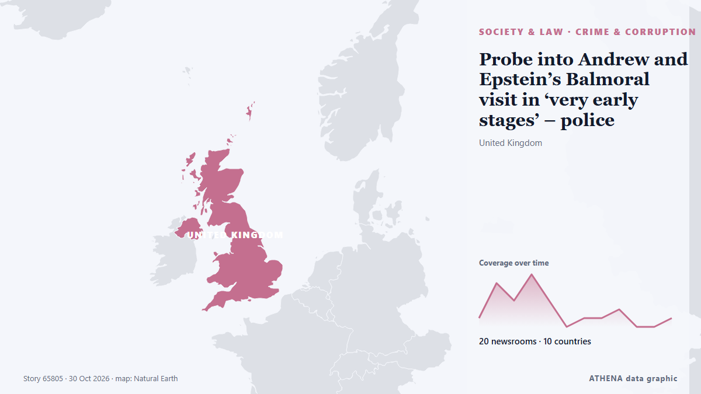

Probe into Andrew and Epstein’s Balmoral visit in ‘very early stages’ – police

Pictures previously released by the Department of Justice in the US appear to show Andrew and Epstein on a shooting trip at the estate. von Evening Standard (London)
Unabhängig gemeldet von 21 Medien in 10 Ländern seit dem 30. Okt., zuerst von Express Tribune; die Berichterstattung flaut ab. ATHENA stuft das Risiko als mäßig ein (3.1/10), vor allem wegen der Schwere des beschriebenen Schadens und seiner geografischen und sektoralen Reichweite. Die Konfidenz liegt bei 91 % (hoch): 21 Medien bestätigen es unabhängig, bei einer mittleren Verlässlichkeit der Quellen von 76 %. Wer berichtete: 6 Medien in Vereinigtes Königreich · United Kingdom, 4 Medien in Australien · Australia, 3 Medien in Vereinigte Staaten · United States. Die Berichterstattung lief von 30. Okt. bis 31. Okt., über 23 Stunden.
Warum es wichtig ist: Rechtliche und politische Änderungen verändern Rechte, Pflichten und öffentliche Leistungen für die Betroffenen.
Was sich geändert hat: 25 neue Berichte von 19 Redaktionen in den 24 Stunden bis 31. Okt..
Erste Schlagzeile: Police Scotland say probe into Andrew and Epstein’s Balmoral visit in ‘very early stages’
Schlagzeilen werden auf Englisch angezeigt, wie veröffentlicht.
Auf einen Blick
Ausgewählt, bewertet und geschrieben nach der veröffentlichten Methodik von ATHENA. Kein Redakteur greift in einzelne Ereignisse ein. So entsteht ATHENA ›
| 30 Oct 08:26 UTC | 1 |
|---|---|
| 30 Oct 09:26 UTC | 5 |
| 30 Oct 10:26 UTC | 3 |
| 30 Oct 11:26 UTC | 6 |
| 30 Oct 12:26 UTC | 3 |
| 30 Oct 13:26 UTC | 0 |
| 30 Oct 14:26 UTC | 1 |
| 30 Oct 15:26 UTC | 1 |
| 30 Oct 16:26 UTC | 2 |
| 30 Oct 17:26 UTC | 0 |
| 30 Oct 18:26 UTC | 0 |
| 30 Oct 19:26 UTC | 1 |
| 30 Oct 20:26 UTC | 0 |
| 30 Oct 21:26 UTC | 0 |
| 30 Oct 22:26 UTC | 0 |
| 30 Oct 23:26 UTC | 1 |
| 31 Oct 00:26 UTC | 0 |
| 31 Oct 01:26 UTC | 0 |
| 31 Oct 02:26 UTC | 0 |
| 31 Oct 03:26 UTC | 0 |
| 31 Oct 04:26 UTC | 0 |
| 31 Oct 05:26 UTC | 0 |
| 31 Oct 06:26 UTC | 0 |
| 31 Oct 07:26 UTC | 1 |
| 30 Oct 10:08 UTC | 0.0 |
|---|---|
| 30 Oct 10:32 UTC | 2.4 |
| 30 Oct 13:05 UTC | 3.4 |
| 31 Oct 07:50 UTC | 3.1 |
Warum diese Zahlen
Bedeutung
Risiko
Konfidenz
Die Berichterstattung – wer berichtete, und wann
Schlagzeile wie veröffentlicht · öffnet das Original- Express Tribune · PakistanPolice investigate former Prince Andrew's stays with Epstein, Maxwell at Balmoral
- The Herald (Scotland) · Vereinigtes Königreich · United KingdomPolice launch probe into Andrew and Epstein’s Balmoral visit
- The Guardian · Vereinigtes Königreich · United KingdomPolice Scotland investigate Jeffrey Epstein and Ghislaine Maxwell’s visit to Balmoral
- Belfast Telegraph · Vereinigtes Königreich · United KingdomProbe into Andrew and Epstein’s Balmoral visit in ‘very early stages’ – police
- Evening Standard (London) · Vereinigtes Königreich · United KingdomProbe into Andrew and Epstein’s Balmoral visit in ‘very early stages’ – police
- The Canadian Press (via CityNews) · Kanada · CanadaScottish police conduct inquiries into ex-Prince Andrew and Epstein’s visit to king’s estate
- Anadolu Agency (English) · Türkei · TurkeyPolice investigate former Prince Andrew's stays with Epstein, Maxwell at Balmoral
- ABC News Australia · Australien · AustraliaPolice probe Andrew's stay with Epstein at king's castle
- ProtoThema English ·Scottish police investigate visits by Andrew, Epstein and Maxwell to Balmoral
- ABC News (International) · Vereinigte Staaten · United StatesPolice probe into ex-Prince Andrew and Epstein's visit to king's estate
- CNA (Channel NewsAsia) · Singapur · SingaporeScottish police probe Andrew, Epstein stay at royal castle: Reports
- Evening Standard (London) · Vereinigtes Königreich · United KingdomAndrew Mountbatten-Windsor faces fresh police probe over alleged Epstein trafficking at Balmoral
- Free Malaysia Today · MalaysiaScottish police probe Andrew, Epstein stay at royal castle
- Sydney Morning Herald · Australien · AustraliaPolice launch inquiry into Andrew and Epstein at royal estate in Scotland
- The New York Times (World) · Vereinigte Staaten · United StatesPolice Investigate Former Prince Andrew and Epstein’s Time at Balmoral, Royal Estate in Scotland
- The Straits Times · Singapur · SingaporeScottish police probe Britain’s former prince Andrew, Epstein stay at royal castle: Report
- Egypt Independent · Ägypten · EgyptPolice Scotland Probe alleged human trafficking involving Jeffrey Epstein and former Prince Andrew at Royal estate
- The Herald (Scotland) · Vereinigtes Königreich · United KingdomSwinney ‘understands’ concern over allegations relating to Epstein’s Balmoral visit
- Al Jazeera English · Katar · QatarPolice in Scotland launch Andrew and Epstein royal castle investigation
- Global News (World) · Kanada · CanadaScottish police probe ex-prince Andrew and Epstein’s Balmoral visit
- Sydney Morning Herald · Australien · AustraliaFormer prince faces new police investigations
- NBC News (World) · Vereinigte Staaten · United StatesScottish police investigate former Prince Andrew's trip to royal estate with Epstein
- Sydney Morning Herald · Australien · AustraliaFormer prince Andrew facing new police probe